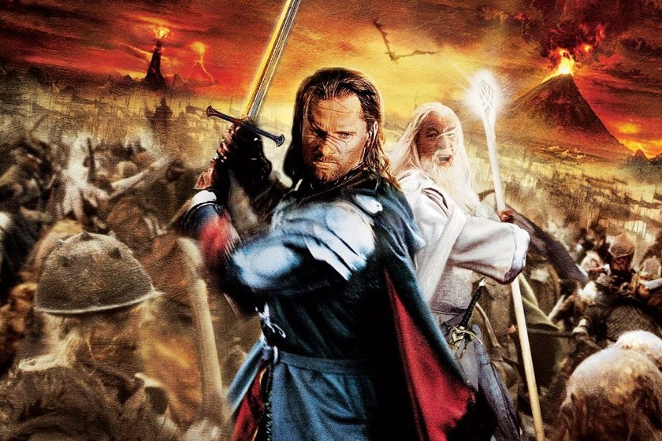

Contacta con nosotros +34 666666666 Ash Nazg durbatulûk, ash Nazg gimbatul, ash Nazg thrakatulûk agh burzum-ishi krimpatul.

Frodo Bolsón (Frodo Baggins en el original inglés), es un personaje de la novela El Señor de los Anillos de J.R.R. Tolkien. Pertenece a la raza de los hobbits. Es hijo de Drogo Bolsón y de Prímula Brandigamo, sobrino de Bilbo Bolsón y medio primo de Merry.

Samsagaz Gamyi (Samwise Gamgee en el original inglés), más conocido como Sam, es un personaje de la novela El Señor de los Anillos de J.R.R. Tolkien. Es un hobbit que sigue el estereotipo típico de los mismos, siempre leal a Frodo en la misión para destruir el anillo. Formó parte de la Compañía del Anillo y, cuando esta se disolvió, acompañó a Frodo en su viaje a Mordor.
Gimli fue un Enano muy respetado en la Tierra Media durante la Tercera y Cuarta Edad. Formó parte de la Compañía del Anillo y combatió en la guerra contra Sauron al final de la Tercera Edad. Después de la derrota de Sauron, se le dio el señorío de Aglarond, conocido como Las Cavernas Centelleantes en el Abismo de Helm.
Es un elfo sindar, hijo de Thranduil, Rey de los Elfos Silvanos del Bosque Negro; por lo tanto, príncipe del Bosque Negro. Formó parte de la Comunidad del Anillo y se hizo muy amigo de Aragorn y de Gimli. Su amistad con Gimli fue un gran paso para las relaciones entre enanos y elfos, muy debilitadas por sus antiguas guerras. Sus armas eran un arco que trajo del Bosque Negro

Meriadoc Brandigamo (Meriadoc Brandybuck en el original inglés), más conocido como Merry, es un hobbit de El Señor de los Anillos escrita por J.R.R. Tolkien. Era alto y delgado (comparado con el resto de los hobbits), formó parte de la Compañía del Anillo y era muy buen amigo de Pippin. Poseía un carácter fuerte y fidelidad hacia sus amigos..

Peregrin Tuk, más conocido como Pippin, es un hobbit de El Señor de los Anillos escrito por J.R.R. Tolkien. Es un Hobbit normal y corriente ( más tarde fue alto y delgado gracias al brebaje de los Ents). Formó parte de la Compañía del Anillo, pues era muy amigo de Merry y Frodo. Contaba con un gran sentido del humor y con sus constantes preguntas (de evidente respuesta) siempre hacían enfadar a Gandalf.
Aragorn (Valor de rey en sindarin), también conocido como Trancos, fue un dúnedain y el trigésimo noveno heredero de Isildur en línea directa. Al finalizar la guerra del anillo, se casó con Arwen y tuvo un hijo, llamado Eldarion.
Boromir es un personaje de la novela El Señor de los Anillos de J.R.R. Tolkien. Fue uno de los mejores capitanes de Gondor y fue un miembro de la Compañía del Anillo. Era el Capitán de la Torre Blanca y portaba un cuerno del que se decía que su sonido atemorizaba a los enemigos, el Gran Cuerno de Vorondil. Su fuerza y su ánimo le convirtieron en un gran comandante que protegió su pueblo. Incluso Éomer de Rohan, le admiraba por su arrojo y liderazgo.

Gandalf es un personaje de la novela El Señor de los Anillos y El Hobbit , aparece también en el Silmarillion y en el Legendarium ,de J.R.R. Tolkien. Es uno de los personajes principales, aparte de ser uno de los cinco Istari (Magos), que fueron enviados para combatir a Sauron, siendo el último de ellos en llegar. Se le conocía de muchas maneras, Gandalf era el nombre que más se usaba; Mithrandir le llamaban los elfos y hombres de Gondor; Incánus, entre los hombres del sur; Tharkûn, entre los enanos y Olórin, en las Tierras Imperecederas, siendo éste su nombre original.
auron es el antagonista y villano principal de "El Señor de los Anillos" y aparece también en El Silmarillion y El Hobbit (escritos por J.R.R. Tolkien). Se le conoció también como "el Nigromante" en "El Hobbit" antes de descubrir su verdadera identidad y "El Señor Oscuro" por los hombres de Gondor entre otros muchos nombres. Es un Maiar, un espiritu nacido del Pensamiento de Eru Ilúvatar, el ser supremo, pero menor en Jerarquía y poder a los Valar. Sin embargo, de entre los Maiar, Sauron era el más poderoso y pertenecía a la más alta jerarquía de entre todos los Maiar, justo detrás de los propios Valar. Sin embargo, fue corrompido por Melkor, y se tornó de naturaleza maligna, convirtiéndose en el enemigo de Elfos y Hombres por la dominación completa y tiránica de la Tierra Media, sobre todo en la Segunda y la Tercera Edad.
Saruman el Blanco, auto nombrado por el mismo como Saruman el Sabio, Saruman el Hacedor de Anillos y Saruman el Multicolor, fue el líder de la Orden de los Istari. También era el Jefe del Concilio Blanco. Se dedicaba a estudiar las artes del Enemigo con el fin de derrotarlo, pero se interesó tanto en ello que terminó siendo atraído por el mal, y ambicionando para sí mismo el Anillo Único, él fue uno de los mayores antagonistas de los acontecimientos sucedidos en la Guerra del Anillo.
Gollum, originalmente llamado Sméagol, fue un hobbit de la rama de los Fuertes nacido cerca de los Campos Gladios. Vivió cerca de 589 años gracias al poder del Anillo Único, que lo desfiguro física y mentalmente. Lo llamaron "Gollum" como referencia al ruido que producía con su garganta, los orcos de Cirith Ungol lo llamaron Fisgón por sus servicios a Ella-Laraña. Samsagaz Gamyi lo llamaba Adulador y Bribón. Y se llamaba a sí mismo "Mi Tesssoro".
Lurtz fue un uruk-hai creado por Saruman en las cavernas de Isengard. Este le entregó el liderazgo de un batallón uruk y le encomendó intercepetar a la compañía del anillo, capturar a Frodo y matar al resto de integrantes. Es un personaje inventado para la película La Comunidad del Anillo, dirigida por Peter Jackson.
Los Nazgûl son un grupo de nueve espectros que aparecen en la novela de El Señor de los Anillos escrita por J.R.R. Tolkien. También son llamados Espectros del Anillo y Ulairi.

La raza de los hombres se refiere a la humanidad en su conjunto y no denota el género en sí. Por tanto, también puede usarse el término para referirse a las mujeres de esta raza. Los hombres son los Hijos Menores de Ilúvatar y fueron conocidos por muchos nombres entre los Eldar o elfos, entre ellos: Hildor los Seguidores, Apanónar los Nacidos Después, Engwar los Enfermizos, y Fírimar los Mortales además los llamaron también los Usurpadores, los Forasteros e Inescrutables, los Malditos, los de Mano Torpe, los Temerosos de la Noche y los Hijos del Sol.

Los Elfos fueron la más antigua y noble de las razas hablantes de la Tierra Media. También llamados la Gente hermosa, Pueblo del Bosque, Primeros Nacidos, Antigua Raza y a sí mismos Quendi "los que hablan". Son la raza más antigua del mundo y son los primeros hijos de Eru Iluvatar en venir al mundo y más tarde encontrados por los Valar.
Los enanos son una raza que habita en la Tierra Media. También son llamados Naugrim, Khazâd y Gonnhirrim.

Los Hobbits, también conocidos como «Medianos» (Periannath en lengua kuduk), son bastante raros y tímidos con la Gente Grande. Son (o fueron) gente menuda de la mitad de la talla de un humano, y más pequeños que los enanos barbudos (Los hobbits no poseen barba). Hay poca o ninguna magia en ellos.
Los Orcos (Orcs en el original inglés), conocidos por los elfos de Beleriand como Glamhoth «Horda Estridente» son una raza malvada, criada por Melkor como burla de los Elfos. Son los Quendi que cayeron en la trampa de Melkor cuando Oromë los fue a buscar para guiarlos a Aman. Fueron utilizados por los Señores Oscuros como la fuerza principal de sus ejércitos, y fueron mejorados y perfeccionados a lo largo de la historia, dando lugar a diversos tipos.
Son una raza de criaturas malvadas de unos 4 metros de altura creadas por Morgoth, y más tarde modificadas por Sauron, a partir de rocas y barro (aunque otras teorías sugieren que antiguamente fueron Ents), para obtener tropas tan grandes y fuertes como los ents.
Los Ents son una raza de seres inteligentes parecidos a árboles ficticios pertenecientes a la novela El Señor de los Anillos, escrita por J.R.R. Tolkien. La mayor diferencia respecto a los árboles normales es que ellos pueden desplazarse. Fueron creados en la Primera Edad por Yavanna, apodada "la Reina de la Tierra". Su principal función era que cuidaran de los otros árboles de peligros, en otras palabras, pastores de árboles. Habitaban en todos los bosques del mundo, pero al final de la Tercera Edad solo quedaban unos pocos en el bosque de Fangorn.